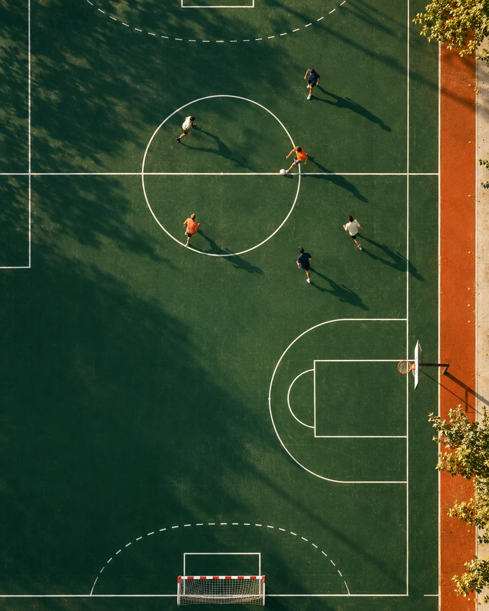

Pour vos clubs
Un parcours complet
- Ateliers gratuits, sur leurs propres dossiers
- Trois thèmes et des modules à la carte
- Un référent IA formé dans chaque club
- Capsules en ligne pour aller plus loin
L'IA responsable, au service du sport amateur
Votre énergie est faite pour le club.
FAIR vous forme à l'IA pour alléger le reste.
Des ateliers gratuits pour les dirigeants et bénévoles, sur vos vrais dossiers. Des outils simples. Et toujours, vous aux commandes.

01 / On connaît la chanson
Mails, dossiers, affiches, comptes rendus : dans la plupart des clubs, ce travail repose sur deux ou trois bénévoles. C'est ce temps-là que FAIR vous aide à récupérer.
02 / À chaque club, son point de départ
Suivez le parcours complet ou commencez par le thème qui vous presse le plus. Chaque atelier part d'un document dont votre club a réellement besoin.
Dossiers de subvention, courriers aux collectivités, comptes rendus de réunion, assemblée générale.
En atelierOn avance ensemble sur votre prochain dossier de subvention.
Affiches de match, publications pour les réseaux sociaux, lettres aux adhérents, présentation aux partenaires.
En atelierOn prépare la communication de votre prochain événement.
Formulaires d'inscription, planning des bénévoles, suivi des licences et des cotisations, tableaux partagés.
En atelierOn construit l'outil interne dont votre club a besoin.
Modules courts, à ajouter au parcours
À la carte, selon ce qui pèse le plus dans votre club.
Dossier partenaire, prospection des commerces du quartier, bilan à envoyer aux partenaires en fin de saison.
Annonces de recrutement, accueil des nouveaux, planning des permanences, messages de remerciement.
Pour les éducateurs : préparer ses séances, adapter un exercice à l'âge et au niveau du groupe.
Photos de mineurs, arnaques générées par IA, fausses informations, fichiers d'adhérents : les bons réflexes, et la charte IA du club.
03 / Apprendre. Faire. Garder.
Toutes les demandes sont lues, d'où qu'elles viennent en France. Les interventions sont programmées selon les disponibilités et les besoins de chaque club.
Voici une première version, à relire avec votre bureau :
Notre club accueille des pratiquants de 6 à 70 ans autour de trois priorités : rendre le sport accessible à tous, former nos jeunes éducateurs et renforcer notre présence dans le quartier. Cette saison, nous voulons ouvrir un créneau découverte le samedi matin et accompagner deux bénévoles vers un diplôme d'encadrement.
04 / Auto-diagnostic · 1 minute
Quatre questions sur votre quotidien. On vous dit par où commencer, et le résultat se glisse directement dans votre demande d'atelier.
12h / mois
La communicationLe thème par lequel commencer.
Demander un atelier avec ce résultatEstimation indicative, affinée lors de l'appel de cadrage. Rien n'est enregistré.
Fédérations, comités, collectivités
FAIR accompagne les clubs de votre territoire ou de votre discipline, gratuitement pour eux, avec des résultats mesurés pour vous.
Pour vos clubs
Pour vos équipes
Pour vous
Pour tous
La démarche s'appuie sur un travail de recherche universitaire en management du sport, mené à l'Université de Lille.
Parler d'un programmeNotre approche
Le « R » de FAIR n'est pas décoratif. Six règles guident chaque atelier et chaque capsule.
Pas d'exercice fictif : on travaille sur un document dont votre club a réellement besoin.
Aucun abonnement à payer. Ce que vous apprenez reste utilisable après notre passage.
L'IA propose, le bénévole décide. Chaque texte est relu avant d'être envoyé ou publié.
Aucune information personnelle sur vos adhérents n'est saisie dans un outil d'IA.
Votre club repart avec ses propres outils et sait s'en servir sans nous.
Football, judo, basket ou pétanque : d'un club à l'autre, les dossiers se ressemblent.
Contact
Club, fédération, collectivité ou simple curiosité : nous répondons à chaque message.
contact@fairassociation.fr
Fédération ou collectivité ? Indiquez le nombre de clubs que vous accompagnez et votre territoire : on revient vers vous avec une proposition de programme.
Bonjour, Je suis [votre rôle] au club [nom du club], à [ville]. Sport : [discipline] · Bénévoles actifs : [nombre] La tâche qui nous prend le plus de temps : [subventions, communication, inscriptions…] Merci et à bientôt, [prénom, nom, téléphone]